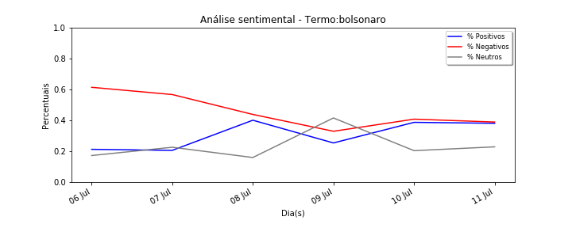
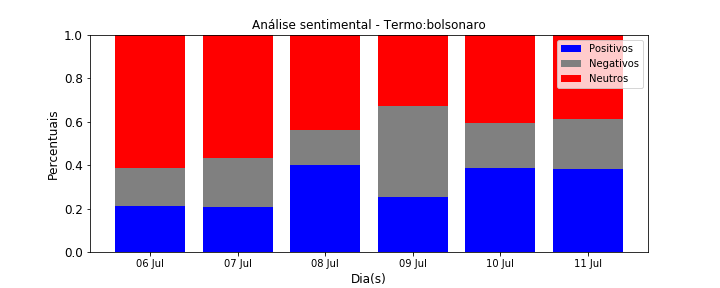
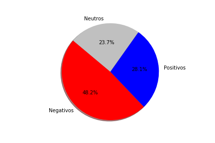

Gráfico de Sentimento em linha
*Os valores aqui apresentados estão considerando TODAS as interações
  Dados de Origem
| Data | Negativos | Neutros | Positivos | %Negativos | %Positivos | %Neutros | |
|---|---|---|---|---|---|---|---|
| 0 | 2018-07-06 | 46 | 13 | 16 | 61.33 | 21.33 | 17.33 |
| 1 | 2018-07-07 | 85 | 34 | 31 | 56.67 | 20.67 | 22.67 |
| 2 | 2018-07-08 | 8879 | 3252 | 8124 | 43.84 | 40.11 | 16.06 |
| 3 | 2018-07-09 | 8214 | 10353 | 6339 | 32.98 | 25.45 | 41.57 |
| 4 | 2018-07-10 | 9953 | 4994 | 9449 | 40.80 | 38.73 | 20.47 |
| 5 | 2018-07-11 | 1327 | 782 | 1300 | 38.93 | 38.13 | 22.94 |
Totalizadores
| Negativos | Neutros | Positivos | %Negativos | %Positivos | %Neutros | |
|---|---|---|---|---|---|---|
| count | 6.00 | 6.00 | 6.00 | 6.00 | 6.00 | 6.00 |
| mean | 4750.67 | 3238.00 | 4209.83 | 45.76 | 30.74 | 23.51 |
| std | 4727.07 | 4010.12 | 4261.95 | 10.95 | 9.21 | 9.27 |
| min | 46.00 | 13.00 | 16.00 | 32.98 | 20.67 | 16.06 |
| 25% | 395.50 | 221.00 | 348.25 | 39.39 | 22.36 | 18.12 |
| 50% | 4770.50 | 2017.00 | 3819.50 | 42.32 | 31.79 | 21.57 |
| 75% | 8712.75 | 4558.50 | 7677.75 | 53.46 | 38.58 | 22.87 |
| max | 9953.00 | 10353.00 | 9449.00 | 61.33 | 40.11 | 41.57 |
Gráfico de Sentimento Linha - Apenas Influenciadores
*Os valores aqui apresentados estão considerando apenas as postagens iniciais para cada termo


Dados de Origem